What to wear, what to wear. Ussa often reminds usa self of an old dalninil who had entirely too large of a wardrobe. As often as that one would get lost in the goblin forests outside Cabilis, would nau surprise ussa at all if that one also got lost in her closet. Now where was ussa, oh xas, what to wear. Ussa have collected and worn all manner of clothing in the past. Some armor, some cloth, some leather, some shirts, some robes, and ussa could go on and on. But recently an abbil saw a painting of ussa wearing an old garment. They chuckled at it and then asked if ussa had more paintings of the former fashions that ussa have worn.
This scroll will document some of the one's ussa has managed to dig up recently. Enjoy the visions of past and current fashion. Perhaps ussa will take new ones of ussa and place them here as well at a later time.
Aluve for now abbils.
This was back before the lands of luclin were uncovered and the forms of all changed drastically. This would be a kedge robe, glowing black stone, drachyl thyxel (or some such) and skull mask of Ennervation. 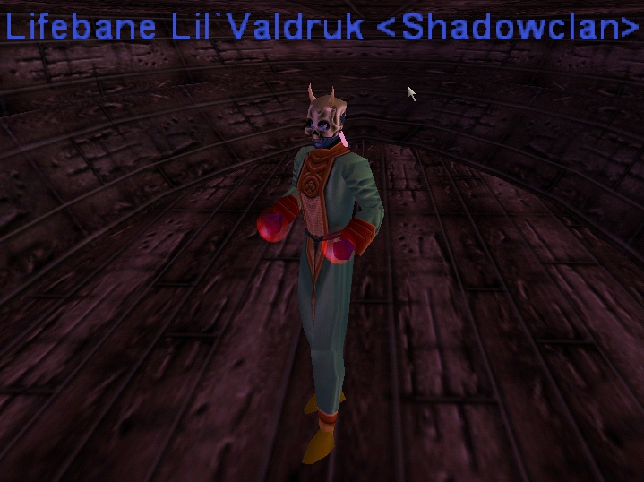 |
Ussa then went for a more manly look, leather and weapon in hand. This is a full suit of Netted Kelp Armor, Skull mask of Ennervation, Scythe of Shadowed Souls, and a Hand of the Reaper. 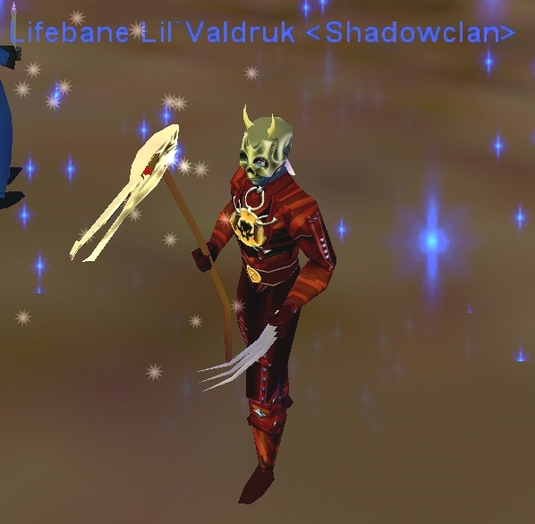 |
Ahh xas, Luclin is uncovered and the forms of all races changed. This was ussa wearing some rag which was found near the rivvils halloween holiday. note, this is now what the skull mask of Ennervation looks like. Same weapons. 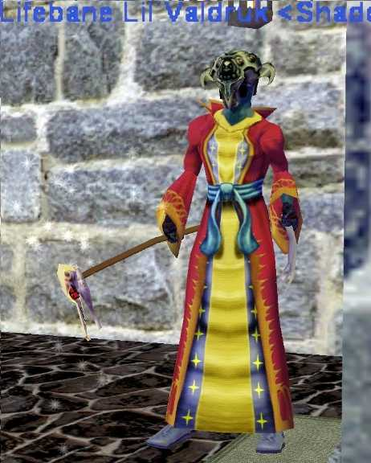 |
Hrmm... Believe this was the Blackened Crystal Robe with same gear. 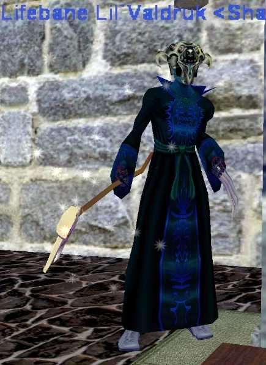 |
And what became of the rather sharp looking netted kelp armor look shown a couple paintings back dos say? Well here it is... the "Levi's Jeans" look. As dos might imagine, ussa was nau at all pleased. 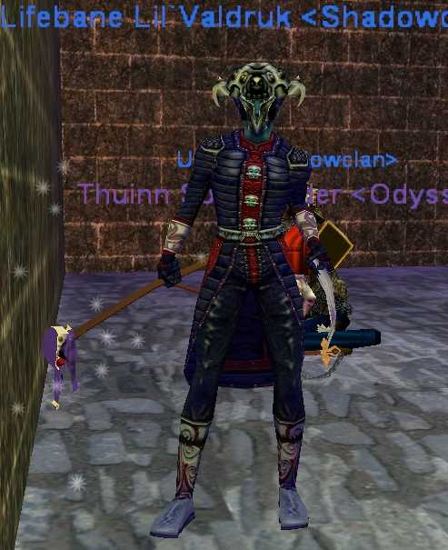 |
Hrm.. then again, in the right positions it might nau look so bad after all. So ussa stayed with this look for a time...... 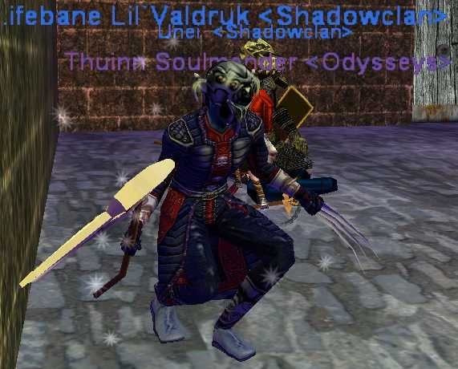 |
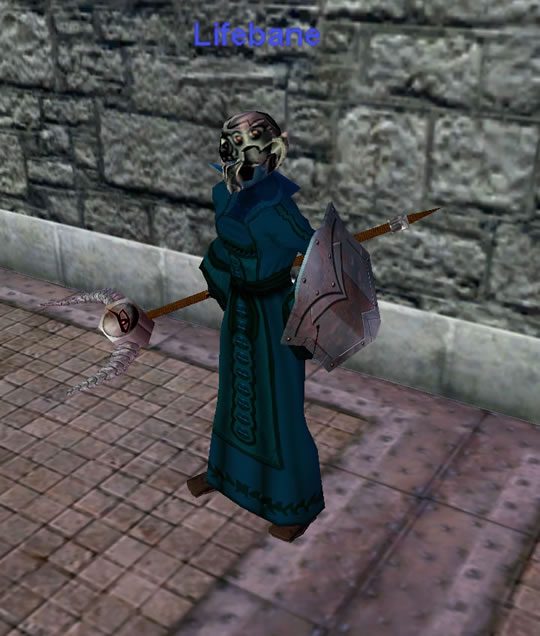 |
So ussa may have made one or two nau bwael fashion decisions, such as this Frog form that ussa adopted for awhile. 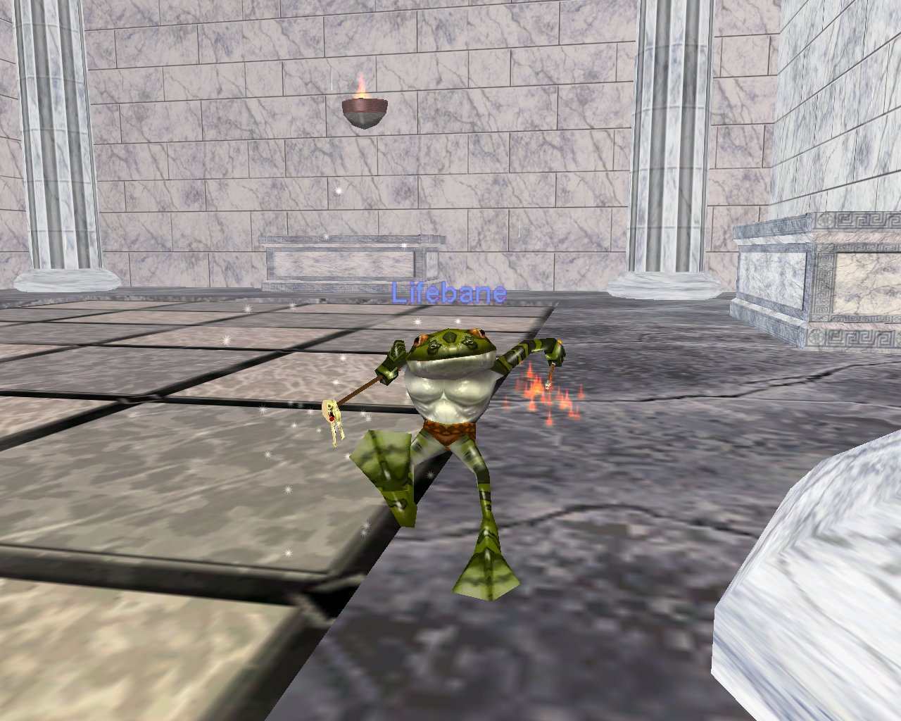 |
Ussa have nau pictures of when ussa used to ride ussa old obsidien steed, Manuer. But here is one of ussa and Leezard, ussa's new mount. Also note, ussa discovered the use of dyes!!! That is the same Helm, robe and Staff as in the previous picture and also brandishing the Wand of the War Wizard. 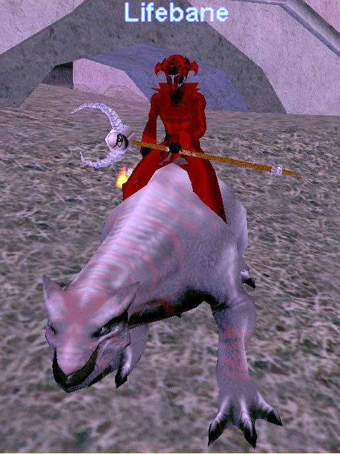 |
Then came the time of the Shields. It seems every Elemental God dos elggs, dos will gather an elemental energy orb of sorts. It can be equipped and when done so, it appears as a shield which depicts it's origin rather clearly if dos understand the glyphs. This one was from Fennin Ro, The Tyrant of Fire. (note: these had absolutely nau power at all, were only for looks) 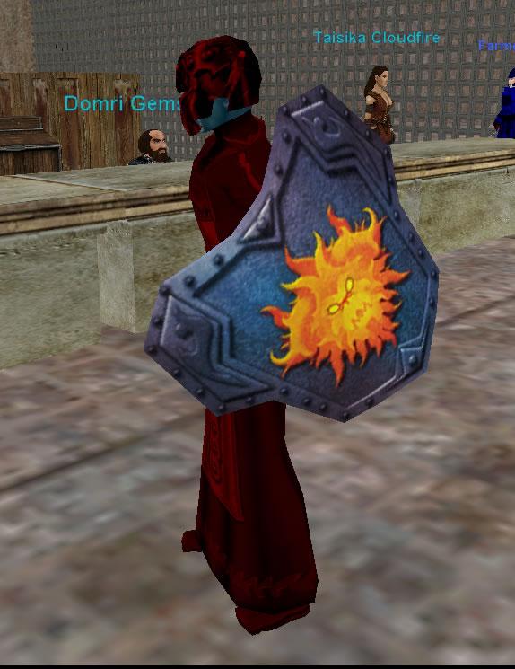 |
Next in the Shields category was this one from Xegony, Queen of Wind or some such. Bleh.. Giant Fairy rivvil.. nau need know more then that. 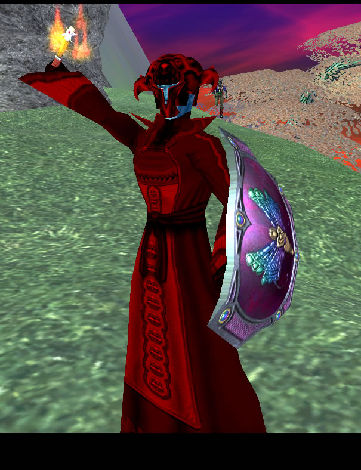 |
Then came the source of ussa'a current phobia of seafood. This was from Cornaiv, Avatar of Water. Dos grow tired of the floating swimming very quickly in this realm. 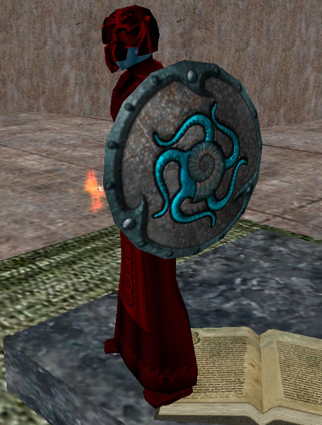 |
Ahh xas, the most grueling period ever in ussa's wanderings of these lands... the Shield from The Rathe Council in the kingdom of Earth. Death to all wooden tiki men! 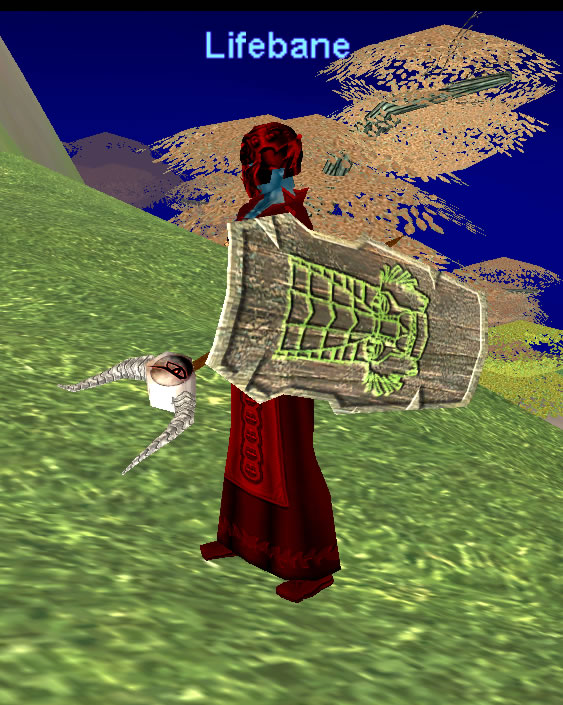 |
Oh xas, if dos give up all of the pretty shield trinkets, dos are rewarded with this ugly stick... the quintessence of elements ussa thinks it was called. The key to entering the Plane of Time itself. 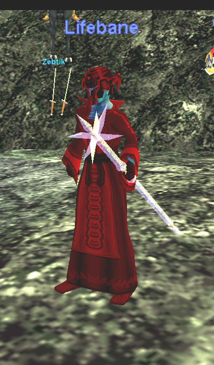 |
And this is ussa current fashion trend. A return to the robeless looks of old. Though in this case, the robe was replaced with a vest of phoenix feathers. 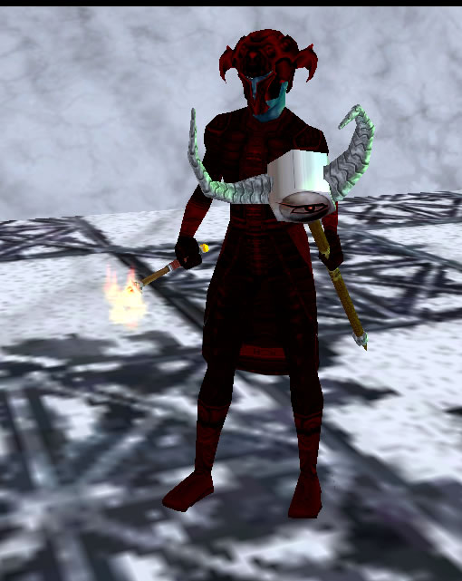 |
|